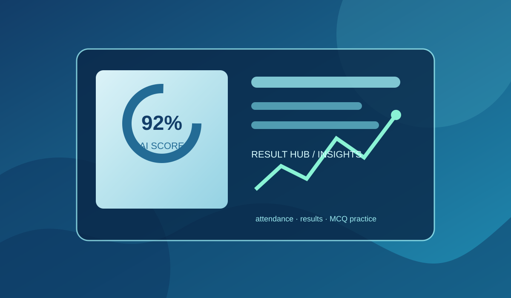

Notice management
Students can receive important academic notices and updates from the institution in one place.
Education project · 2025/26
A web-based education management system that connects students, teachers, and administrators in one reliable academic platform.

About the project
PEC Result Hub was designed as an education-focused platform for managing academic information and making learning resources easier to access. It brings academic records, communication, and practice tools together in a role-based system.
Students can receive important academic notices and updates from the institution in one place.
Attendance information is organised so students and administrators can follow academic participation.
Students can view their results by semester, while administrators can maintain accurate academic records.
Students can use AI-assisted MCQ practice to study concepts, revise lessons, and prepare more effectively.
Role-based access
Teachers can manage academic information and contribute to the learning process through the platform.
Students can check notices, attendance records, semester-wise results, and practise MCQs with AI support.
Admins can manage users and academic data, including entering and maintaining student marks and results.
Technology